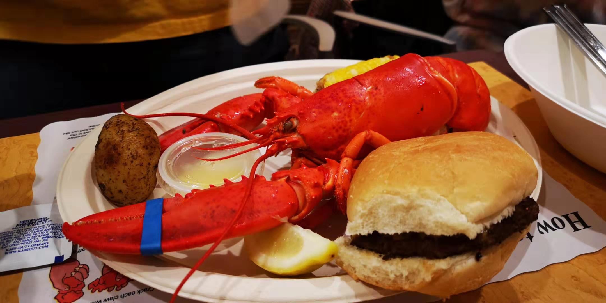

When you think of Boston's restaurant scene, you probably think of seafood: lobster rolls, clam chowder, crab cakes or old favorites like baked beans and Boston cream pie. Sure, traditional comfort food has its rightful place in our hearts and appetites.
Feel free to contact me at mxwu@umich.edu for more resturant recommendations.
